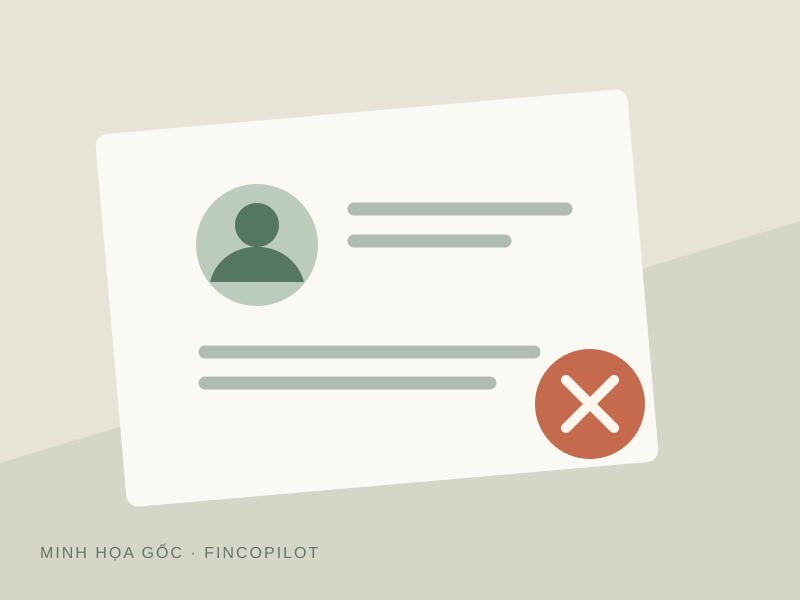
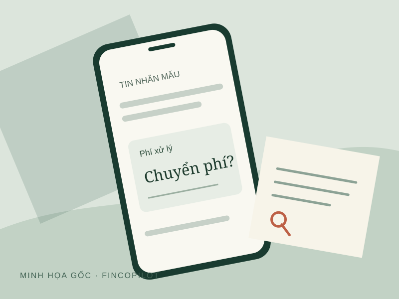

Lời mời đầu tư tự nhận là nhân viên hỗ trợ
Đối chiếu danh tính và kênh liên hệ trước khi chuyển tiền.
Xem dẫn chứng ↗Đọc dấu hiệu và nguồn dẫn chứng trước khi hành động. Nội dung dưới đây chỉ là bản mẫu giao diện.

Không chia sẻ mã xác thực hoặc chuyển phí theo lời nhắn. Tự tìm kênh chính thức để đối chiếu.
Nguồn dẫn chứng mẫu ↗ · Đọc dấu hiệu ↗
Đối chiếu danh tính và kênh liên hệ trước khi chuyển tiền.
Xem dẫn chứng ↗Tìm điều khoản và xác minh tổ chức phát hành.
Xem dẫn chứng ↗